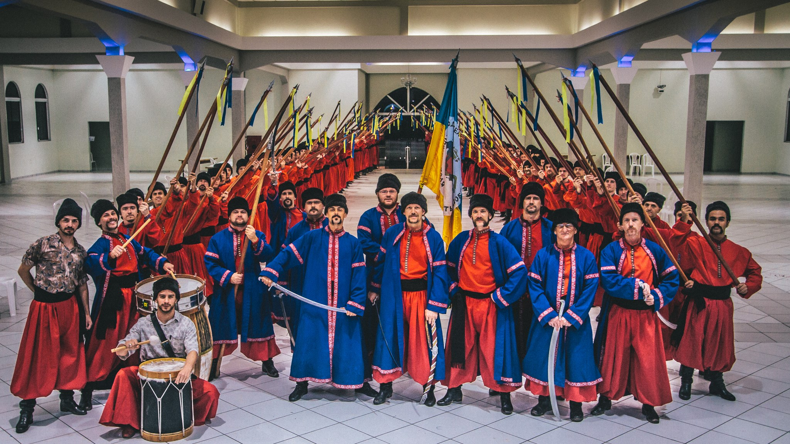

os Cossacos
História dos Cossacos
Páscoa Ucraniana

Kozake (Os Cossacos)
Em ucraniano (коза́ки), são um povo nativo das estepes das regiões do sudeste europeu (principalmente da Ucrânia e do sul da Rússia) que se estabeleceram mais tarde nas regiões do interior da Rússia asiática.